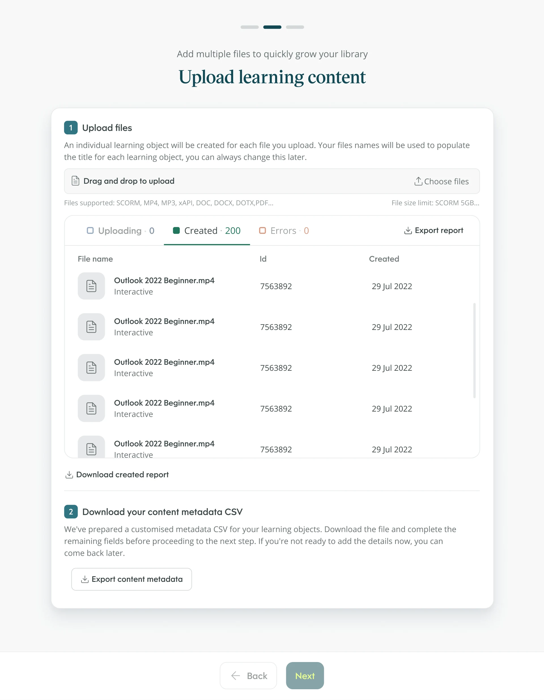
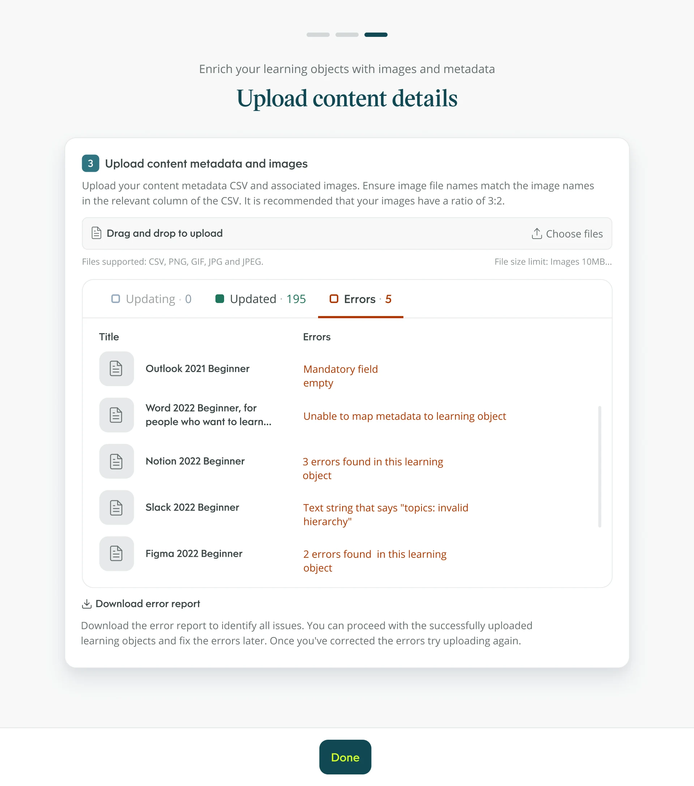
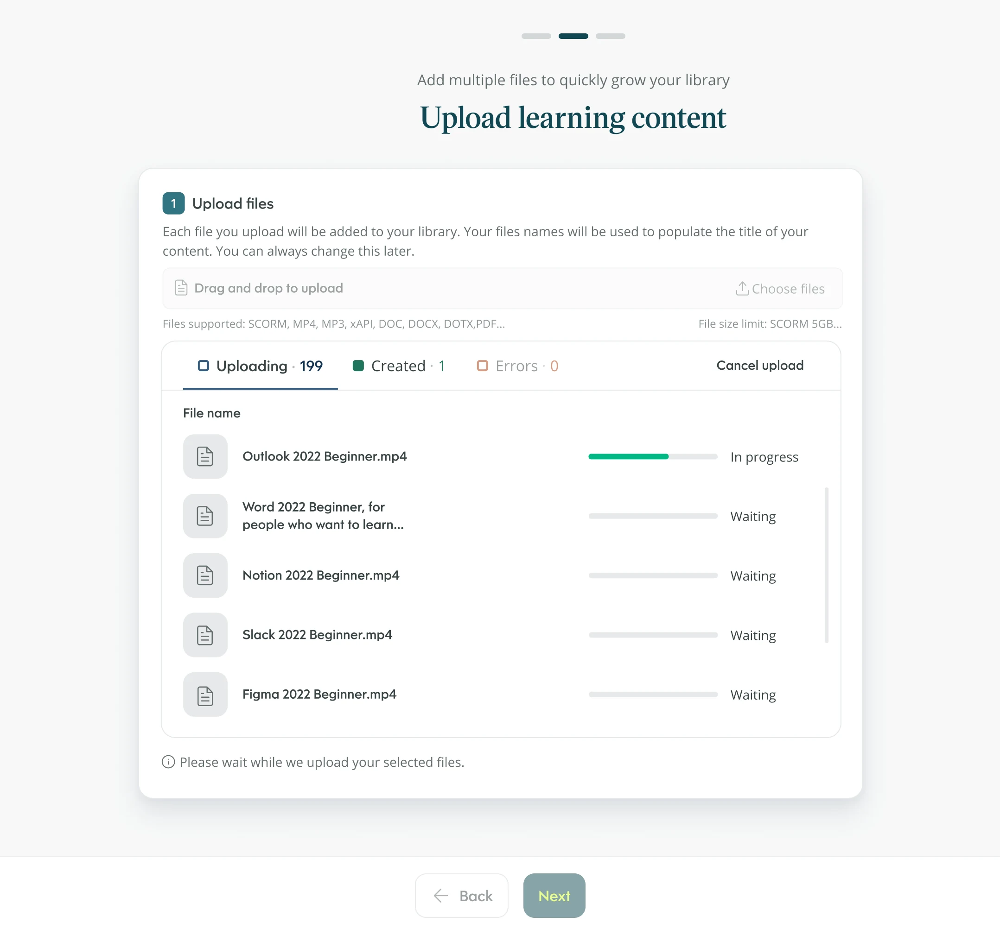
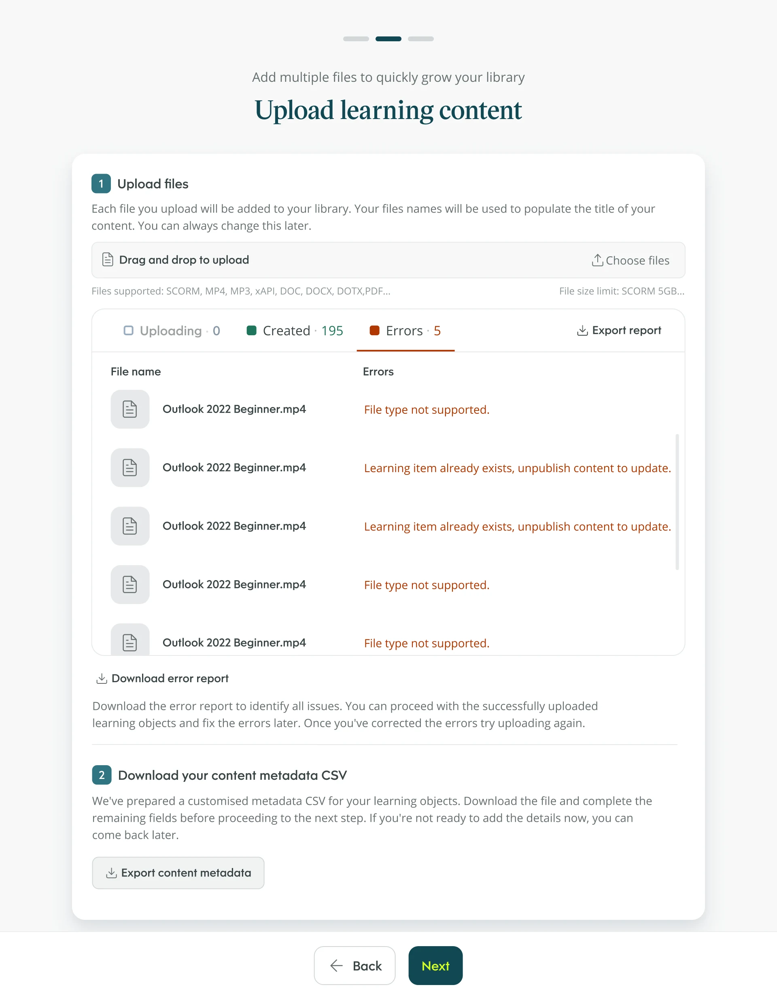
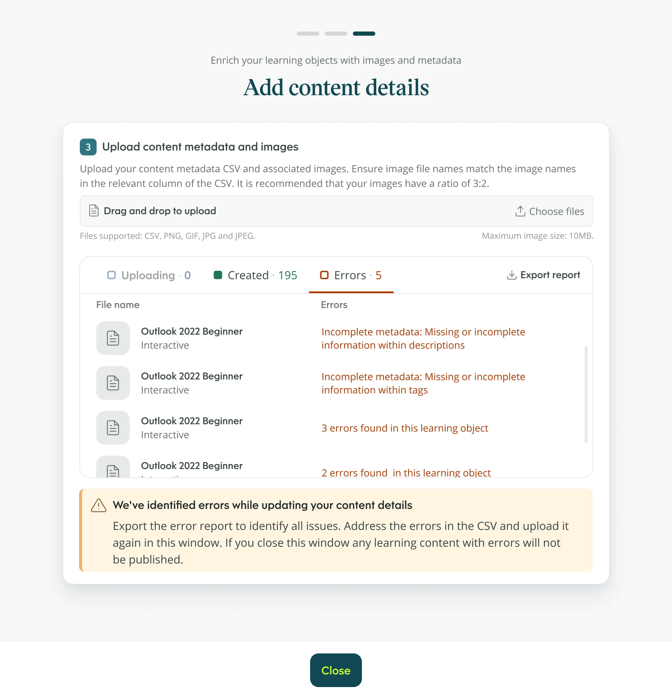
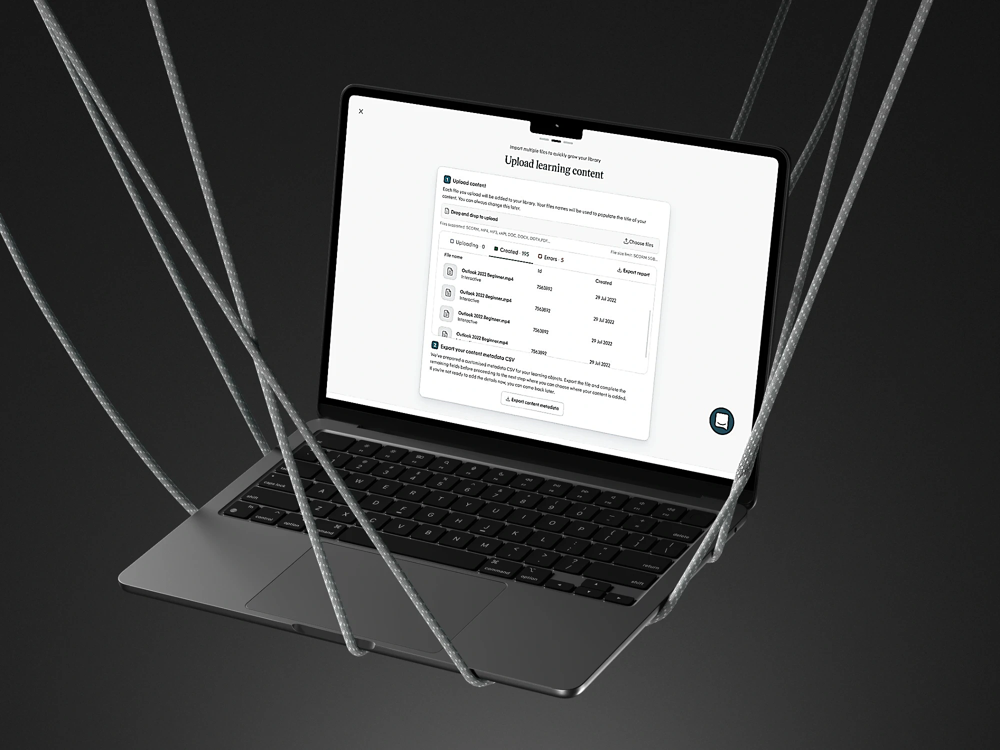

Go1 · Learning platform · 2023
Redesigning partner onboarding to cut time-to-value by 29%
A bulk uploader that lets content creators add their whole catalogue to Go1 in one go, instead of one learning object at a time.
Context
Creators had to add every learning object and its metadata one by one. Large catalogues were onboarded by hand by Go1's content team, which could not scale.
Impact
Partners now publish whole catalogues themselves, 29% faster.
0%
faster publishing for beta partners
0
creator partners interviewed
0
partners tested the prototype


The problem
Adding content one item at a time was holding partners back.
Manual onboarding slowed how quickly creators saw value, and as enterprise catalogues grew, it would only slow Go1's growth further.
Research
Partners needed to upload in bulk and fix problems without help.
I watched onboarding sessions in Fullstory, interviewed 22 creator partners and analysed competitors. A strong bulk uploader needed:
- Support for many formats and sources
- Robust, customisable metadata
- Bulk editing with clear error handling
Who we designed for
SMB content partner
Focused on the quality of their content and the revenue it earns.
- Publish a whole catalogue
- Earn from their content
- Keep quality high
- One item at a time
- Waiting on Go1's team
“We’re missing tools to upload many pieces of content at the same time.”
L&D manager
Makes sure employees have the right, compliant learning resources.
- The right content for each team
- Compliant, up-to-date resources
- Content in their own portal
- Slow to add new material
- Unclear where content will appear
Mapping the journey
Two journeys: a new partner's first upload, and the one they repeat when adding more content.
An empty library points straight to the first upload
Destination first: testing showed partners needed to know where content would go
Many files at once, any supported format
One CSV for every item; each field explained
Errors listed per item, fixed in bulk
Live in the library or portal, no wait on the content team
Upload sits with the content it adds to
Remembers the last destination, so it is one step fewer
Steps run on their own: metadata now or later
Clean uploads publish in one go
New items land at the top of the library
What it meant for the design
- A step-by-step wizard that explains metadata
- Steps that can run on their own, such as metadata later
- Components that can be reused across the product
- Upload contentAdd many files at once
- Add metadataExplained at each field
- Choose destinationLibrary or portal
- Review and publishFix errors in bulk


Testing
Testing with 14 partners reshaped the flow before launch.
Their feedback led to three changes:
- Error messages detailed enough to act on
- Destination chosen first, so it's clear where content goes
- A more compact layout for zoomed screens

Outcome
A four-step uploader partners run on their own, and a foundation to build on.
Partners choose a destination, upload many files, add metadata from one CSV and fix errors in bulk, with no wait on Go1's team. Beta partners published 29% faster. Next: better accessibility, richer errors and alternatives to CSV.

Reflections
What I would take into the next project.
Clear, regular communication with stakeholders, and working closely with engineering, made the design better and solved technical problems more creatively.